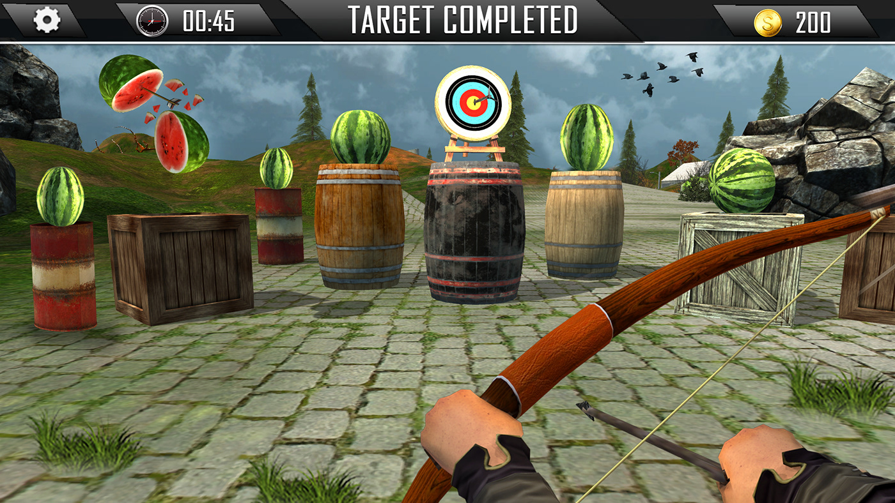
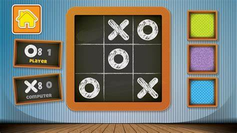
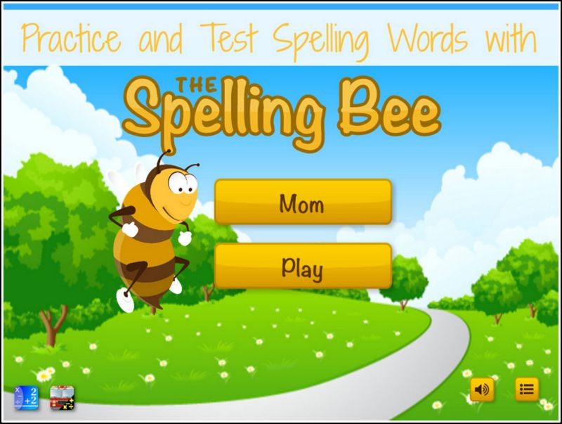

Three Featured Games
Archery Mania
Archery mania is an archery game that allows user to aim at the correct answer to collect points.
It helps improve the user's knowledge of geographical locations. The questions have a variety
of types and different levels with unlimited tries.
Tick-Tack-Toe
Tick-tack-toe is a fun to play math game where you need to add the numbers to get points.
It improves the ability to do mathematical problem mentally. The games are generally short but
there are unlimited attempts which makes the experience even better.Spell bee
Spell Bee is a vocabulary improving competitive game which helps the user learn more words
and their respective spelllins. A word is provided with their pronunciation and meaning, while the
user has to figure out the spelling. You can find the more about the files at File1 and Also The template can be found at